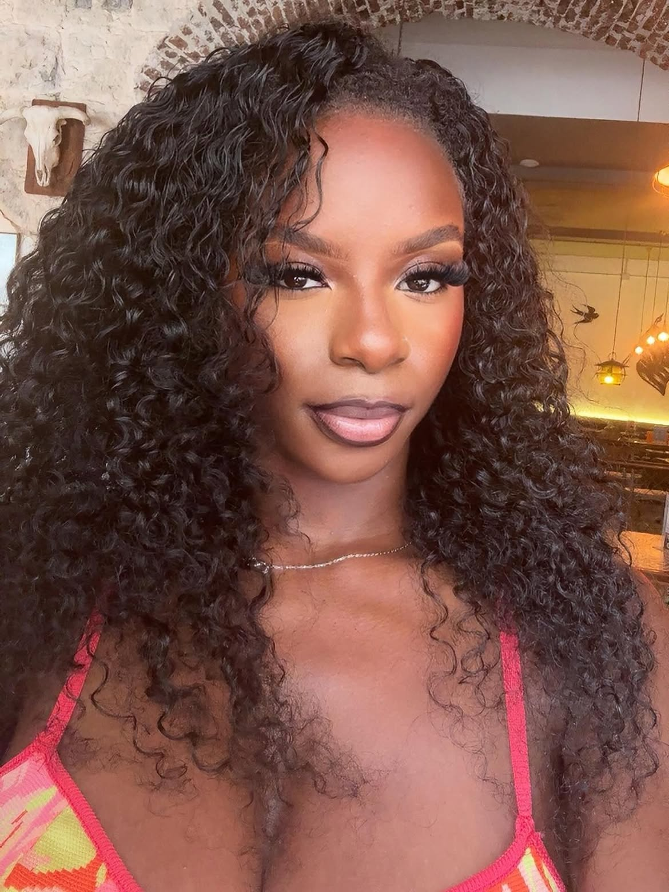
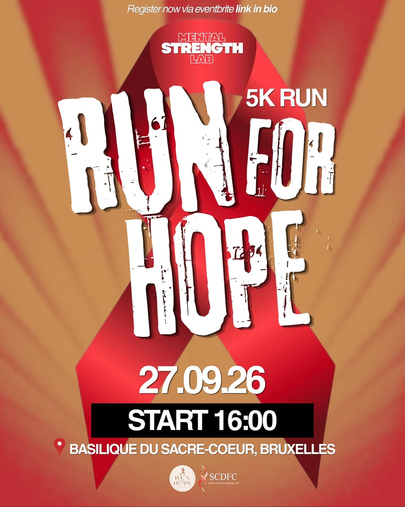

01
Ouvert à tous
Jamais couru ? Parfait. Pas de chrono, pas de classement, des bénévoles ferment la marche : personne ne finit seul.
Courir ensemble. Aider ensemble. Chaque pas compte.
Une course de 5 km ouverte à tous, à votre rythme, en courant ou en marchant. Et chaque pas compte pour une cause.
Pas besoin d'être sportif : on court ou on marche à son rythme, ensemble, pour une cause.

« Dans un monde où l'on est souvent très concentré sur soi, j'avais envie d'utiliser ma passion pour le sport afin de créer un impact positif autour de moi.
Associer le plaisir de courir à une cause utile, aider les autres et apporter un peu d'espoir à ceux qui en ont besoin, c'est ce qui m'a donné envie de créer Run for Hope. Chaque pas peut avoir du sens. »
« J'aimerais que chaque participant reparte avec le sentiment d'avoir accompli quelque chose : relever son propre défi en parcourant 5 km, tout en contribuant à une belle action. Au-delà de la course, l'objectif est de créer un moment de partage, de solidarité et d'unité, où chaque pas nous rapproche d'un monde plus solidaire. »
Fondatrice de Run for Hope
Un dimanche après-midi, trois heures pour se retrouver. Horaires indicatifs, basés sur l'édition 2026.
Retrait des dossards sur le parvis, échauffement collectif en musique.
Les organisateurs accueillent chaque participant et prennent le temps d'échanger avec vous avant le départ.
Départ groupé pour 5 km. Course ou marche, chacun à son allure.
Médailles, photos, boissons et annonce du montant collecté. Fin vers 18:00.
Parvis de la Basilique, Parc Elisabeth, 1083 Bruxelles (Koekelberg).
Métro 2 et 6 arrêt Simonis, puis 10 min à pied. Tram 19 et bus 87 arrêt Basilique.
Course ou marche, sans chrono. Chacun avance à son allure, personne n'est laissé derrière.
Tenue confortable, baskets, gourde, et votre confirmation d'inscription sur le téléphone.
À chaque édition, Run for Hope & Solidarity court pour un combat différent et s'associe à une nouvelle association. La cause de l'édition 2027 sera annoncée prochainement.
En 2026, les coureurs se sont mobilisés contre la drépanocytose, la maladie génétique la plus répandue au monde, aux côtés de Sickle Cell Fighting Club.
Chaque don, petit ou grand, est reversé à l'association partenaire de l'édition.
« Mental Strength Lab & Run for Hope », dimanche 27 septembre 2026, au pied de la Basilique de Koekelberg.

Courir ensemble. Aider ensemble. Chaque pas compte.
Dites-nous qui vous êtes et combien vous serez : on vous recontacte pour organiser votre venue.
Non. Le parcours de 5 km se fait en courant, en trottinant ou en marchant. Personne n'est chronométré, on avance ensemble et des bénévoles ferment la marche.
Rien : l'inscription est entièrement gratuite. Les dons sont libres et reversés à l'association partenaire de l'édition.
Chaque édition soutient une cause différente, avec une association partenaire. En 2026, les fonds sont allés à Sickle Cell Fighting Club, contre la drépanocytose. La cause et l'association de 2027 seront annoncées ici.
Oui, et c'est même encouragé : entre amis, en famille, entre collègues ou en club. Remplissez le formulaire groupes pour les inscriptions de groupe ou d'entreprise.
On court quand même : c'est Bruxelles ! En cas d'alerte météo, les inscrits sont prévenus par e-mail et sur Instagram.
L'inscription sera gratuite. Suivez-nous sur Instagram pour être prévenu·e dès l'ouverture, ou écrivez-nous.